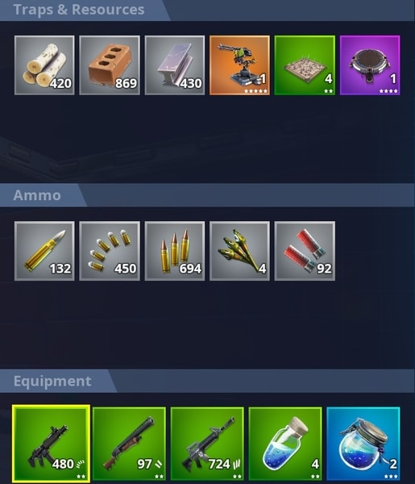

In your inventory, you always want to make sure that you can access certain guns easily.
I will talk more specificly for both Controller and keyboard & Mouse players.
In your inventory, you have 5 available "slots" of weapon, health, and sheild items.
Most health / shield granting items, have a limit of how many of that specific item in a single slot.
All weapons take up a whole slot, and playing on controller, you can only go back and forth between slots,
so you have to organize your inventory to where you can access your shotgun, AR, and SMG.
in a fortnite match, there are three main guns that you should use.
You dont have to use all of them, but there are guns that you always want at all times.
1. The AR, more formaly known as the assult rifle.
2. The Shoutgun.
3. The SMG, also known as the small machine gun
4. What i call the Z weapon.
I call these guns, a Z weapon, is becuase when i use them on mouse and keyboard, i press Z to access them.
These guns consist of snipers, RPG's and throwable items.
Now that you know what your loadout (invintory) should like like,
lets dive into how you can sort it.
When your sorting your loudout, you want to make every gun accessable.
For example, the way I sort my loudout, is i have my shotgun in the first slot.
my SMG in the second, so with the press of one button i have my SMG out.
in my middle slot, I have my health / shield items.
in my second to lasat slot, i hold my Z weapon
Then finally in my last slot, i hold my AR
this way